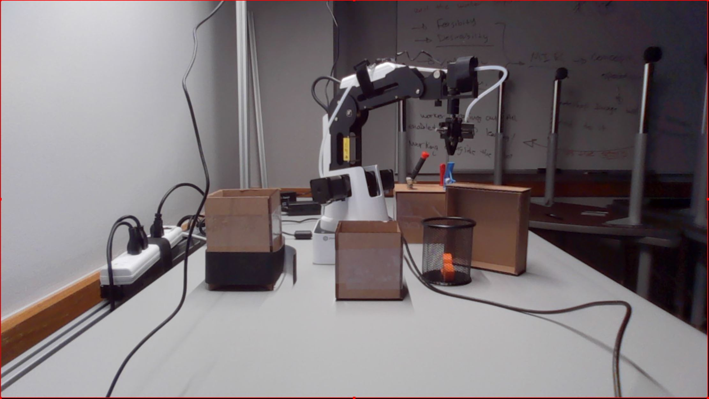
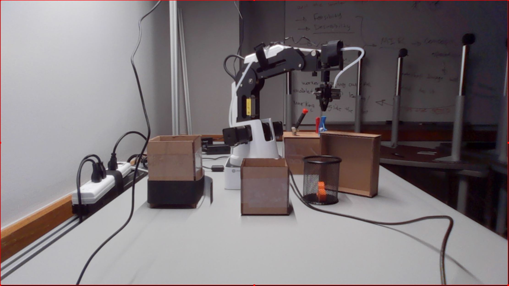

As a part of the VT Honors studio I worked with an interdisciplinary team of four in developing a systems learning approach for aircraft fuselage workers, in collaboration with Boeing, to improve safety, job satisfaction, accuracy and productivity on a factory floor. The motive behind this project was to address the issues Boeing had with its AI driven FAUB machine, used in airplane fuselage drilling, that had been pulled out of production in November of 2019. Our team, in collaboration with Boeing and GE developed a pilot scenario involving a robot performing basic pick and place tasks, a human and a work cell. We initially started off by drawing a knowledge map of the cognitive and psychomotor abilities a worker employs while performing a task. Then, we sorted the findings into what skills can only be performed by a human, and what can be substituted by a robot. We ended up developing an interface a worker can use to fill in the gaps of the Human-Machine interaction in the case of FAUB. We generalized this process and developed a systems learning approach which can be applied in various scenarios involving AI driven machines in factories to achieve the goals listed in our value proposition. Below are the links to the final presentation video and the process book of our project.
This project was created during a hackathon at Duke University in fall 2019. The team consisted a group of four students including me from different universities. The inspiration for the idea was taken from a couple of students at Duke, who were working on a system to improve the productivity of Military training instructors by digitizing most of their procedures. The idea was to develop an application that provides a very simple interface for the military instructors to grade the cadets. This information is stored in a database and the instructors have the ability to visualize the cadets records at anytime based on their previous performance. This cuts down a lot of time in looking up paper files and records that are also vulnerable to physical damage. We developed a react native application using a MySql database intended for a tablet device that performs the above mentioned actions.
This was the project a group of four, including me, came up with for the 7th annual Hackathon held at Virginia Tech during spring 2020 semester. The goal of this project was to develop a product that aims to locate open parking spots in a lot, and guide the users to the closest available one from a building requested by the users. We started off by looking for open source algorithms that use image analysis to detect open parking spots by performing image analysis on satellite images of parking lots. We then modified it so that it can work for images of the parking lot from different angles. We then developed an Alexa skill to provide a voice interface for the users to ask for available lots from a particular building. The response was delivered by the voice assistant. The details of the response included directions to the closest available lot, and distance to the lot in feet or meters. The data was hosted and the responses were calculated on the google cloud.
This is my first Virtual Reality development project using unity. I have come up with a simple idea of making a VR version of the game/ puzzle Towers of Hanoi. I have incorporated a couple of different game modes such as beat the clock and the lowest moves to solve the puzzle. This simple project has given me a great experience in learning the basics of Unity engine.